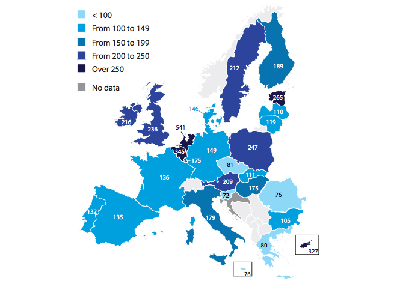
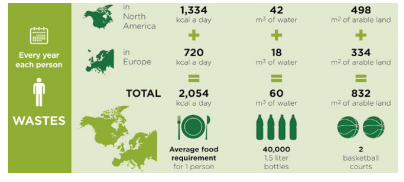

In the EU, food waste along the supply chain has been estimated at approximately 89 million tonnes or 180 kg per capita per year, and is expected to rise to about 126 million tonnes a year by 2020, unless action is taken.

Food loss and waste have negative environmental and economic impacts, and their existence raises questions for society.